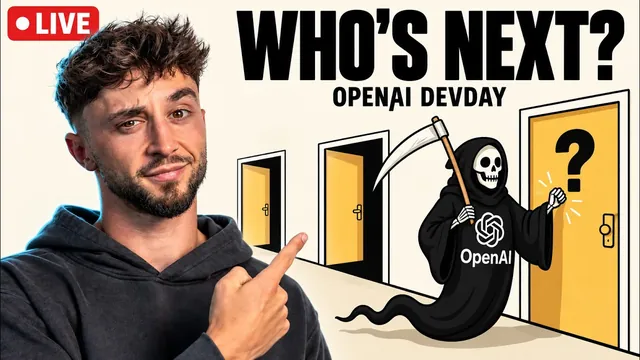

오픈AI DevDay 2026, 팀원들과 실시간 리액션

원본 영상 보기 →
- AI가 도구에서 '위임받는 직원'으로 넘어갑니다
- 속도와 가격이 같이 내려가면 쓰는 방식이 바뀌어요
- 연구소가 개발을 가져가도 서비스의 값어치는 남아요
한 줄 요약
Liam Ottley 팀이 OpenAI DevDay 2026 키노트를 라이브로 보면서 반응한 영상이에요. 24시간 일하는 에이전트 "dots", 팀 협업 공간 "spaces", 더 싸고 빠른 GPT 6.1 Soul과 ultra fast, 개발자용 agents API와 마켓플레이스까지 정리하고, AI 에이전시가 이 변화를 어떻게 기회로 쓸지 이야기합니다.
전체 내용 정리
항상 켜져 있는 개인 에이전트 "dots"가 나왔어요
OpenAI가 무엇이든 맡길 수 있는 always-on 에이전트 "dots"를 공개했습니다.
dots는 자기만의 클라우드 컴퓨터와 브라우저를 갖고, 4,000개가 넘는 앱과 연결돼요. 사용자가 이미 연결해 둔 플러그인을 그대로 씁니다. 밤사이 들어온 일을 검토해서 아침에 급한 것만 알려주고, 일정이 바뀌면 캘린더를 조정해 주는 식으로 쓰는 사람의 업무 방식을 익혀 갑니다.
"낡은 API에서 앱을 옮겨라", "버그 리포트를 모니터링하고 수정안과 PR 초안을 만들어라" 같은 책임 단위의 일도 맡길 수 있어요. 앱 사용과 컴퓨터 사용의 경계를 직접 정할 수 있고, dots는 OpenAI가 가장 aligned된 모델이라 부르는 Astra 위에서 돌아갑니다.
Liam 팀은 이걸 Muse나 OpenClaw, Grockbot과 같은 계열로 봤어요. 귀여운 캐릭터로 AI를 친근하게 만드는 것도 다른 연구소와 똑같다고 짚었고요.
사람과 에이전트가 같이 일하는 "spaces"
spaces는 팀원과 dots가 한 페이지 안에서 함께 일하는 공간이에요.
페이지에서 dots를 불러 의존성을 추적시키거나, 댓글에서 dot을 태그하면 바로 작업에 들어갑니다. 페이지에 "API 플랫폼 슬라이드를 확인하고 매일 결과를 업데이트해라" 같은 지시를 걸어 둘 수도 있어요.
데모에서 Holly는 출시 전날 dot이 디자인 변경과 일정 변경을 먼저 알려 주는 모습을 보여 줬습니다. 음성으로 상황을 물어보고, 스레드를 dot에게 넘기고, 코덱스로 iPhone 시뮬레이터에서 앱을 돌려 PR까지 올리게 했어요. 다만 라이브 데모는 오류로 한 번 다시 돌려야 했고, 음성 부분은 스트림에서 제대로 작동하지 않았습니다.
dots와 spaces는 ChatGPT Pro, business, premium, enterprise 사용자에게 당일 제공됐고, dot의 대화는 사용량에 잡히지 않아요. 기업용으로는 팀 전체가 함께 쓰는 "specialist dots" 미리보기도 나왔습니다.
Liam 팀은 이걸 Notion과 Slack을 합친 멀티플레이어 AI 작업 공간으로 읽었어요.
더 싸고 더 빠른 모델
GPT 6.1 Soul은 Astra에 가까운 지능을 5분의 1 가격에 주는 '매일 쓰는 모델'로 소개됐어요. 캐시된 입력 비용이 표준 입력보다 95% 싸서, 에이전트가 맥락을 재사용하며 오래 일하기 좋습니다.
ultra fast는 초당 300토큰을 내는 속도 옵션이에요. fast가 표준의 2배 속도에 2배 가격이라면, ultra fast는 8배 속도에 표준의 6배 가격입니다. 나란히 놓고 로켓을 만들게 한 데모에서 ultra fast 쪽은 이미 발사됐는데 일반 쪽은 완성 근처에도 못 갔어요.
구독제도 바뀌었습니다. 사용량이 Plus의 25배이고 ultra fast를 쓸 수 있는 Pro 500이 생겼고, Pro 200도 다시 열렸어요. 응답 속도가 중요한 선택 작업을 위한 decisions API도 미리보기로 공개됐고요.
Liam 팀은 가장 눈에 띈 게 속도라고 했습니다. 프런티어 모델이 빨라지면 일하는 방식 자체가 크게 바뀔 거라고 봤어요.
AI 연구 인턴과 컴퓨터 사용
OpenAI는 명확히 정의된 연구 과제를 맡길 수 있는 "AI research intern"이 목표대로 나왔다고 밝혔습니다.
연구 책임자 Tel의 설명이 흥미로워요. 모델이 컴퓨터 사용 하네스를 스스로 최적화하게 해서 지연 시간을 2배 넘게 줄였고, 모니터링과 거부 행동 학습을 개선해 안전성도 높였다고 합니다.
진전 속도가 눈에 띕니다. 1월에는 15분 미만 테스트에서만 성공했고 하루 이상 걸리는 과제는 대부분 실패했는데, 7월 기준으로는 하루짜리 연구 과제의 3분의 1 이상을 사람 개입 없이 해냈다고 해요. Astra가 수십 년간 열려 있던 수학 문제를 100개 넘게 푸는 걸 도왔고, 신약(항생제)·에너지·로봇 분야에서도 쓰이고 있다고 소개했습니다.
개발자 도구
Codex가 완전히 클라우드로 옮겨갔어요. 폰에서 시작한 작업을 브라우저나 데스크톱에서 이어받을 수 있고, 노트북을 닫아도 에이전트가 계속 일합니다. 취약점을 계속 찾아 검증된 수정안까지 준비하는 Codex Security Cloud도 나왔고, Codex와 dots를 움직이는 하네스는 오픈소스로 공개됐어요.
agents API는 하네스, 호스팅, 메모리, 멀티 에이전트 제어를 묶어서 공개 베타로 나왔고 컴퓨터 사용도 붙었습니다. AWS Bedrock에서 OpenAI 에이전트를 돌릴 수 있고, 데이터를 서버에 저장하지 않는 ZDR과 추론 시점 프라이버시를 내세운 OpenAI private intelligence도 미리보기로 공개됐어요.
숫자도 공유했습니다. Responses API는 지난 1년간 100배 성장하면서도 99% 넘는 안정성을 유지했고, 첫 토큰까지 걸리는 시간은 45% 줄었으며, 툴 호출과 워크플로우는 30% 넘게 빨라졌다고 해요.
데모에서는 스케치를 3D 게임으로 만들고, 모델이 그 게임을 직접 플레이하고, Hugging Face의 프로그래머블 로봇에 비전(Astra)·이미지 생성(GPT image 2.5)·음성(GPT live one)을 붙이는 모습을 보여 줬습니다.
유통과 수익화
OpenAI는 매주 약 12억 명이 쓰는 ChatGPT를 유통 채널로 열겠다고 했어요.
"Sign in with ChatGPT"를 쓰면 사용자가 자기 ChatGPT 요금제에 포함된 토큰으로 내 앱을 쓸 수 있습니다. 시작 파트너는 60곳이에요. plugin extensions로는 에디터·대시보드·워크스페이스를 ChatGPT와 Codex 안에 넣을 수 있고, Figma와 Adobe가 예시로 나왔습니다. 대화 중에 필요한 플러그인이 추천되기도 하고요.
새 OpenAI marketplace에는 Code Rabbit, Notion 등 30곳 넘는 파트너가 있고, 기업 고객은 기존 OpenAI 약정 금액으로 그 제품을 살 수 있어요.
Sam은 마지막에 AI가 사람을 톱니바퀴로 만드는 산업혁명이 아니라 르네상스가 되어야 한다고 말하고, 사용량 리셋도 함께 진행했습니다.
Liam 팀의 해석: 왜 기회인가
Liam 팀은 dots가 사실상 OpenClaw를 작업 공간에 넣은 거라고 봤어요. OpenClaw는 리눅스처럼 대중용이 아니라서, 이런 클라우드형 폐쇄 제품이 대중화를 이끌 거라는 거죠. 반면 Victor(Slack 에이전트)나 Kylon 같은 스타트업이 여전히 앞서 있다고도 했습니다. 다만 이번 발표에서 dot 여러 개를 두고 역할을 나누는 멀티 에이전트가 가능해 보이는 점은 인정했어요.
에이전시 관점의 결론은 이렇습니다. 클라이언트는 결국 스스로 하지 않아요. 그래서 수요는 남고, 다만 개발보다 감사(audit)·컨설팅·교육·변화 관리(change management)가 가치의 중심이 됩니다. 새 발표는 늘 새로운 수요를 만들고 납품도 빠르게 해준다는 게 Liam의 결론이에요.
시청자 질문에는 이렇게 답했습니다. 자동차 딜러에게는 시승 예약이나 문의 응대처럼 덜 침습적인 것부터 붙이라고 했고, 자동화는 n8n 대신 Claude Code와 Codex면 충분하다고 했어요.
핵심 인사이트
- AI가 도구에서 '위임받는 직원'으로 넘어갑니다: dots는 책임 단위의 일을 맡기면 계속 일하는 구조예요. 결국 사람은 무엇을 맡길지 결정하는 쪽으로 이동합니다.
- 속도와 가격이 같이 내려가면 쓰는 방식이 바뀌어요: Soul의 저렴한 캐시 입력과 ultra fast의 속도 옵션 덕에 에이전트를 오래, 자주 돌리는 게 현실적인 선택지가 됩니다.
- 연구소가 개발을 가져가도 서비스의 값어치는 남아요: 플랫폼이 만들어 주는 부분이 늘수록 진단·설정·교육·정착이 서비스의 핵심이 됩니다.
오늘 당장 해볼 것
- 지난 한 주 동안 반복해서 한 일 3개를 적어 보세요. 메일 분류, 일정 조율, 자료 정리 같은 거요. 각각에 "사람이 최종 승인만 하면 되는가"를 표시해 보면 맡길 수 있는 게 보입니다.
- ChatGPT, Claude, Slack 중 이미 쓰는 도구의 에이전트 기능을 켜서 위 3개 중 하나를 일주일만 맡겨 보세요. 결과를 기록해 두면 다음 판단이 쉬워집니다.
- 고객에게 제안할 서비스를 '개발'이 아니라 "업무 감사 + 에이전트 설정 + 팀 교육" 3단계 패키지로 다시 써 보세요.